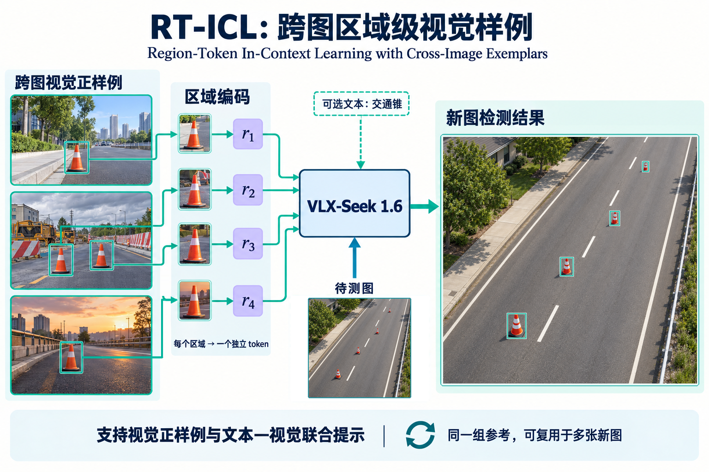
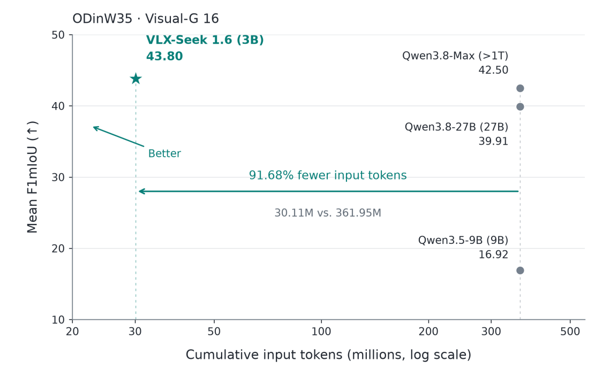
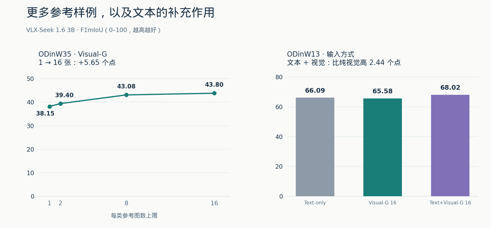
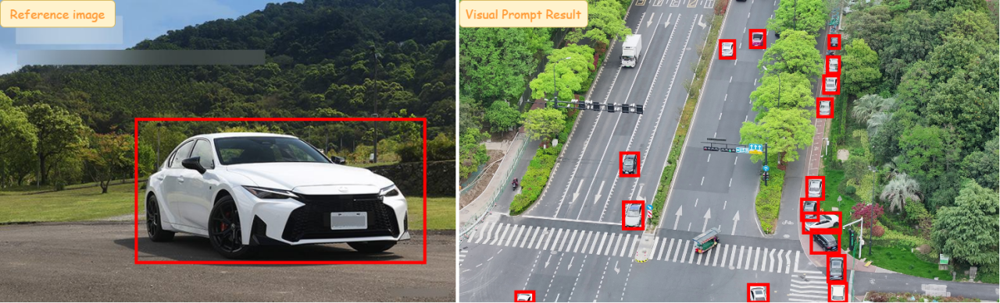
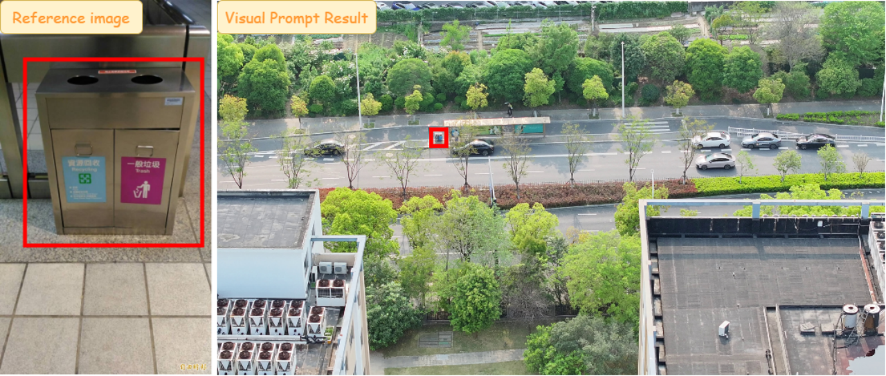
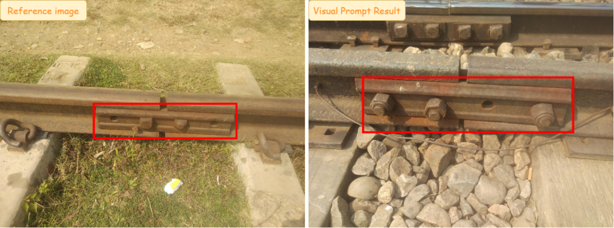

Highlights
- Cross-image region-level exemplars: Reference regions become prompt units whose visual features are inserted directly into the model context to guide detection in a new image.
- Multi-exemplar in-context learning: Multiple positive visual exemplars provide complementary appearance cues, with support for visual-only and text-plus-visual detection.
- Efficient, reusable reference representations: The number of exemplar-side visual feature tokens is determined by the number of reference regions, and encoded features can be reused across queries.
- Strong visual-prompt detection: VLX-Seek 1.6-3B reaches 43.80 F1mIoU on the cross-image visual-exemplar setting of ODinW35, outperforming larger open-source and closed-source models.
Introduction
VLX-Seek 1.6 introduces RT-ICL (Region-Token In-Context Learning with Cross-Image Exemplars) on top of the region-reference detection architecture. It encodes positive visual exemplars from independent reference images as region-level context for detecting targets in a new image. The model supports multi-exemplar visual-only prompts as well as joint text-label and visual-exemplar prompts, without updating model parameters for the current reference set.
The central change is how visual exemplars are represented and used. Each reference region becomes an independent region token, and multiple exemplars enter the multimodal model context together with the test image. Through in-context learning, the model detects targets in the test image based on the concept defined by those visual exemplars. This preserves differences across exemplars while compressing the exemplar-side visual sequence; text-prompt detection remains consistent with VLX-Seek 1.5 while cross-image visual conditioning is added.
1. Visual Prompting and Representation Limits
Text prompts specify a target through a class name or description, but a natural-language label may not fully express its appearance or the intended annotation scope. Visual prompts provide target instances directly, allowing the model to use visual evidence such as shape, texture, and structure. For example, a user can box traffic cones in separate reference images and reuse those exemplars on other road images without adding a manual prompt to every image.
By source, visual prompts can be divided into two types. Visual-I (Interactive) selects target boxes from the current test image for within-image interaction. Visual-G (Generic) extracts visual information from independent reference images for detection in a new image. Here, G means Generic, not Global. Visual-I requires interaction on the current image, while Visual-G reuses independent reference images across many new images and is better suited to batch detection of a fixed target concept.
1.1 Specialized Detectors: Class-Level Exemplar Aggregation
Specialized detectors such as YOLOE and T-Rex2 support cross-image visual prompting. In their generic visual-prompt setting, features from same-class reference exemplars are averaged into a class-level embedding. This produces a reusable target representation, but the prediction stage can no longer directly access each exemplar's independent representation, so differences in viewpoint, appearance, and local structure may be weakened.
1.2 SAM 3: Visual Exemplars Within an Image or Video
SAM 3 can specify a visual concept through exemplars, text, or a combination of both, and then segment matching instances. Its standard inference process, however, is organized around the current image or a single video. It does not directly apply exemplars from multiple independent reference images to another test image, limiting reference reuse across images.
1.3 General VLMs: Image-Level Context Cost
For general VLMs without a dedicated region-exemplar mechanism, cross-image prompting is usually implemented with boxed reference images or target crops. A boxed full-image exemplar requires the model to understand which object the mark indicates. A crop highlights the target, but still has to be encoded as a full visual token sequence. As the number of references grows, so does the exemplar-side context. Our general-VLM comparison uses boxed reference full images.
RT-ICL provides a dedicated region-level representation: reference boxes specify the visual regions to encode, and each region enters the language model as one feature token. This preserves independent exemplar information and cross-image reuse while reducing the context-token cost of feeding references to the language model.
2. RT-ICL: Region-Level Exemplars for Context-Conditioned Detection

Figure 1: Encoded reference regions participate in new-image detection as region-exemplar tokens.
2.1 From Region References to Region Exemplars
The existing VLX-Seek architecture formulates localization as region retrieval and region reference. Candidate regions in the test image are represented as selectable, referable visual region tokens, and the model returns detections through region references. VLX-Seek 1.6 extends this design to the reference side, making selected regions in reference images the visual condition that defines the target.
A region-level visual exemplar has two elements: the reference image provides visual content, and the reference box identifies the positive object to encode. The model receives the region's visual feature rather than text describing box coordinates, and the region does not need to be passed as a separate cropped image with a full visual sequence. One reference image can provide multiple regions, with one independent region feature token for each.
Compressing within a region while preserving independent representations across regions is the key distinction of RT-ICL. The reference-region set forms an exemplar-token sequence together with the test image, test candidates, and task instruction. The model selects candidates matching the visual condition and returns them through the existing region-reference mechanism. Reference boxes define the target and provide visual evidence; candidate boxes in the test image are generated by the model's OPN, without manual boxing of every test image.
2.2 Multi-Exemplar In-Context Learning and Text-Visual Input
RT-ICL performs in-context learning at inference time. Model parameters remain fixed, while the current visual-exemplar set defines the detection condition. Independent region-exemplar tokens preserve different reference instances, allowing the model to use complementary appearance cues in one context instead of merging all instances into a fixed class prototype in advance.
| Prompt mode | Input condition | Best suited for |
|---|---|---|
| Visual exemplars only | Multiple positive regions without ground-truth class names | Defining the target through instance appearance with less dependence on naming |
| Text + visual exemplars | The same region exemplars plus the class name | Combining semantic constraints from text with visual evidence from exemplars |
In the joint mode, text and region tokens enter the context together, and the model integrates the conditions. For a category such as traffic cones, text provides class semantics while reference regions add concrete visual instances. Replacing or adding references changes the visual condition for the current request, and one reference set can be reused across many new images.
3. Region-Level Compression and Reference Reuse
Compared with boxed full images or crops, RT-ICL gains context efficiency from the granularity of the exemplar representation that enters the language model. If a reference set contains N target regions, the independent region representation uses N exemplar visual feature tokens. By contrast, the visual sequence length of image-level input in a conventional VLM depends on the tokens produced by each reference image or crop.
This changes the unit of exemplar context from an image sequence to a target region. Additional reference instances can retain their individual representations while keeping context usage controlled. Compared with class-embedding aggregation, RT-ICL preserves multi-exemplar information; compared with image-level reference input in general VLMs, it reduces exemplar-side token cost.
Reference images still require visual encoding; region compression does not eliminate reference-image processing. Encoded region-exemplar features can be cached and reused across requests, which is useful for fixed reference sets and continuous test-image streams. Caching removes repeated encoding, while the exemplar tokens still participate in subsequent model computation.
4. ODinW35 Cross-Image Visual-Prompt Evaluation
ODinW (Object Detection in the Wild) evaluates cross-domain generalization for object detection. ODinW35 covers 35 detection tasks across aerial, underwater, medical microscopy, traffic, and other domains. We use it to test whether RT-ICL can use positive region exemplars from independent reference images to locate the corresponding targets in test images from different domains without task-specific fine-tuning.
We evaluate the 0.6B and 3B versions of VLX-Seek 1.6 on ODinW35 and compare them with Qwen3.5-9B, Qwen3.8-27B, and Qwen3.8-Max. We use two visual-prompt settings:
- Visual-G 16: Up to 16 reference images and corresponding target regions per class, without the ground-truth class name.
- Text+Visual-G 16: The same visual references together with the ground-truth class name.
Reference images are taken from each task's training set to build per-class reference sets. Up to 16 images containing the class are selected, and the class annotation boxes identify positive visual exemplars. Reference and test images are separated. Training images and region annotations are used only as inference-time context and are not used for task-specific fine-tuning or parameter updates.

Table 1: Complete ODinW35 evaluation. Scores are reported on a 0–100 scale; higher is better.
The 3B model obtains the best score in both settings, exceeding Qwen3.8-Max by 1.30 and 0.79 points, respectively. Compared with text-only detection by the same model sizes, visual references improve the score by more than 7 points for both models.
Visual-G 16 defines target appearance and annotation scope directly through regions in reference images, without class-name text. This reduces dependence on the literal meaning of a label or on prior semantic associations. The per-task results reflect this effect: on AmericanSignLanguageLetters, the 3B model improves from 6.11 with Text-only to 71.94 with Visual-G 16; on DroneControl, it improves from 1.21 to 57.55.
Metric and setup: The evaluation detects each ground-truth class in a test image and then merges class-level results for image-level scoring. At each IoU threshold, image-level precision and recall are averaged before computing F1. Averaging F1 across the ten thresholds from 0.50 to 0.95 gives each task's F1mIoU, and the final score is the unweighted mean over 35 tasks.

Figure 4-1: Accuracy versus cumulative input-token efficiency on ODinW35 Visual-G 16. The x-axis is cumulative input tokens, point size indicates model scale, and the y-axis is Mean F1mIoU.
On ODinW35 Visual-G 16, VLX-Seek 1.6-3B uses only 30.11M cumulative input tokens, while the comparison models use about 361.95M tokens, reducing input by 91.68%. It reaches a Mean F1mIoU of 43.80, above the much larger Qwen3.8-Max at 42.50, giving a stronger accuracy-to-token trade-off.
5. Analysis: Number of Exemplars and Text-Visual Complementarity
5.1 Detection Gains from Expanding the Reference Set
To test whether RT-ICL can use more visual exemplars effectively, we evaluate VLX-Seek 1.6-3B with visual-only prompting on ODinW35. The per-class reference limit is set to 1, 2, 8, and 16 images. The corresponding F1mIoU scores are 38.15, 39.40, 43.08, and 43.80. Increasing the limit from 1 to 16 images improves the score by 5.65 points.
5.2 Effective Text Semantics Further Improve Visual-Prompt Detection
The benefit of joint input depends on whether the text semantics match the detection target. On the ODinW13 subset, VLX-Seek 1.6-3B scores 66.09 with Text-only, 65.58 with Visual-G 16, and 68.02 with Text+Visual-G 16. Joint input is 2.44 points above visual-only and 1.93 points above text-only.

Figure 5-1: Gains from expanding the reference set and text-visual complementarity on ODinW13.
| Model | Text-only | Visual-G 16 | Gain over Text-only |
|---|---|---|---|
| VLX-Seek 1.6-0.6B | 34.28 | 41.61 | +7.33 |
| VLX-Seek 1.6-3B | 36.23 | 43.80 | +7.57 |
ODinW13 labels generally have a direct semantic correspondence with the detection targets: text provides category knowledge, while visual exemplars add appearance and localization scope. Some ODinW35 tasks instead contain label ambiguity or annotation-scope mismatch, so text can interfere with the target defined by visual exemplars. RT-ICL lets the task determine the input mode: use text plus visual exemplars when the class name is precise, and use visual exemplars alone when the label is difficult to interpret.
6. Cross-Image Detection Cases
We show three representative categories: cross-view transfer, visual exemplars for targets that are difficult to describe, and text-visual complementarity.
6.1 Cross-View and Cross-Scale Detection
Reference and test images do not need to share the same viewpoint. In the bus, car, and trash-bin cases, references come from close or ground-level views while test images come from drone views. Scale, background, and camera angle all change, yet the model can locate the corresponding targets using appearance and structural cues from the reference regions.

Figure 6-1: Cross-view localization from a close bus reference to a drone road scene.

Figure 6-2: Cross-view, multi-object detection from a car reference in an aerial road scene.

Figure 6-3: Viewpoint and scale changes between a trash-bin reference and a drone road scene.
6.2 Visual Exemplars Are More Specific Than Short Text
For specialized or fine-grained local targets, a short class name often cannot fully express appearance and annotation scope. A reference region provides a concrete instance, allowing the model to infer both what to detect and how precisely to localize it.

Figure 6-4: A visual exemplar specifies the appearance and localization scope of a fine-grained defective fishplate target.

Figure 6-5: A visual exemplar helps localize a wrist region in medical imagery.

Figure 6-6: A visual exemplar helps distinguish similar targets in a chessboard scene.
6.3 Text and Visual Exemplars Are Complementary
Text provides category semantics, but text alone can match the wrong target when symbols, local appearance, or semantics are ambiguous. Visual exemplars provide concrete appearance, while text provides semantic constraints; together they can improve target selection.

Figure 6-7: Text and visual exemplars complement each other to localize the correct letter target.

Figure 6-8: Text-only, visual-only, and joint-prompt detection results in a complex scene.
7. Conclusion
VLX-Seek 1.6 extends the region-reference architecture into a context-conditioned detection framework that supports positive exemplars across images. RT-ICL uses regions as visual-prompt units, compressing each exemplar while preserving independence across exemplars, and processes them with optional text and test regions in a multimodal language model. ODinW35 demonstrates competitive detection at edge-oriented model scales, while the reference-count and ODinW13 experiments show the value of multi-exemplar input and text-visual prompting.